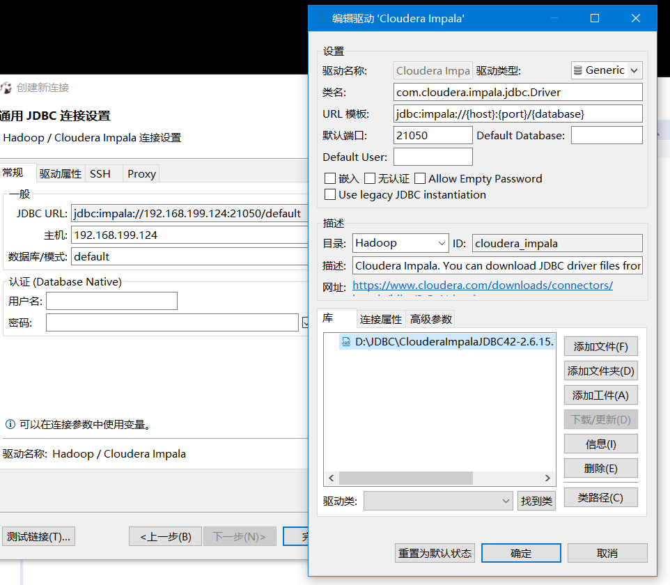
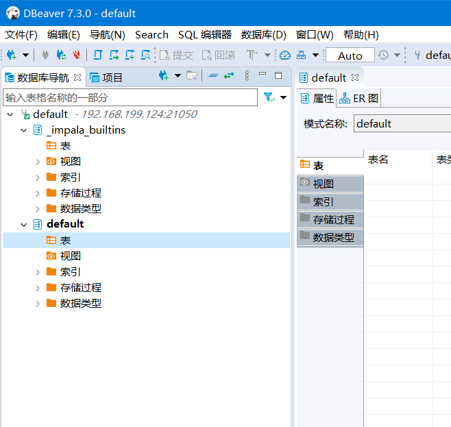
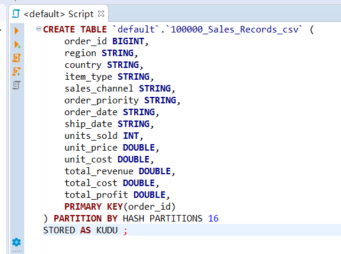
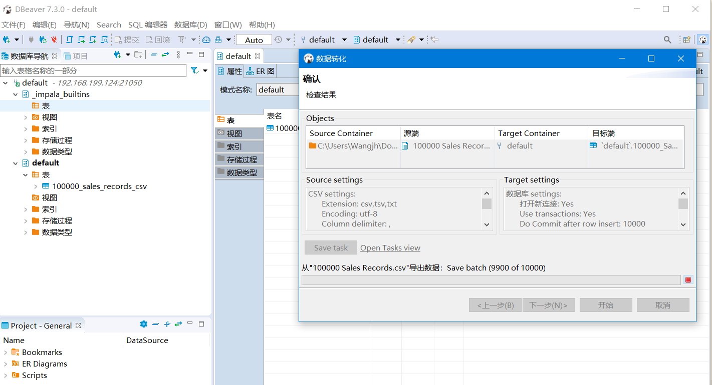
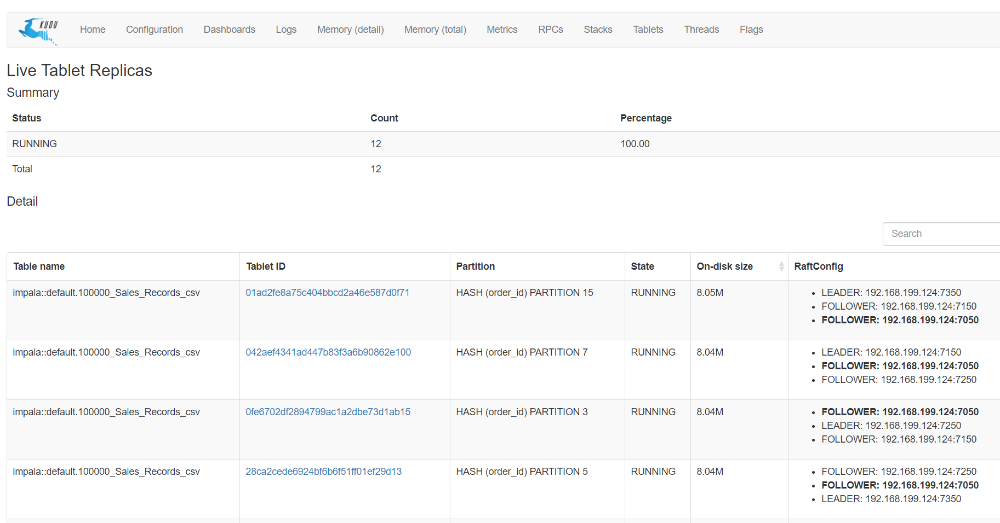
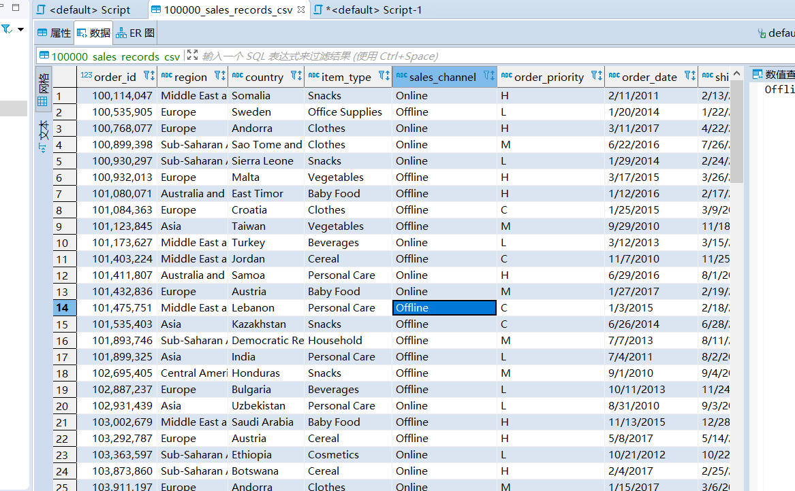

kudu + impala 测试环境搭建及测试
1. 配置 kudu
1.1. 配置执行环境
直接使用官网 quickstart 的部署方法，使用docker安装。
docker 安装方法可见另一个帖子 使用 docker-machine 安装docker。
我使用的是win10 自带的 hyper-v 虚拟机 docker 创建方法
使用的创建语句如下：
docker-machine create -d hyperv --hyperv-cpu-count 4 --hyperv-memory 8192 --hyperv-virtual-switch "P Default Switch" docker-default
这里我设置了，4核8G，其他参数可执行 docker-machine create -d hyperv --help 查看。如果使用的是virtualbox，替换 hyperv 即可
|
执行 create 一定要用git带的那个 bash，可以搜索bash，再右键用管理员运行。如果用windows自带的 powershell，会一直卡在 Waiting for SSH to be available… 处
|
1.2. 测试执行
需要设置 KUDU_QUICKSTART_IP 参数，官网上写的是 export KUDU_QUICKSTART_IP=$(ifconfig | grep "inet " | grep -Fv 127.0.0.1 | awk '{print $2}' | tail -1) ,由于使用的客户端是 Windows 系统，无法执行官网提供的命令，这里可以直接把它配置在系统的环境变量中，key为 KUDU_QUICKSTART_IP，值为docker虚拟机IP
eg. 192.168.1.123
执行 docker-compose -f quickstart.yml up -d。
原以为这里只使用 quickstart.yml 就可以，结果发现文件中引用了当前目录，因此，有必要把工程clone下来再执行 docker-compose
|
| 第一次执行时可以不用 -d 参数，方便看日志。 |
2. 配置 impala
docker run -d --name kudu-impala --network="docker_default" \
-p 21000:21000 -p 21050:21050 -p 25000:25000 -p 25010:25010 -p 25020:25020 \
--memory=4096m apache/kudu:impala-latest impala访问docker服务的 25000 端口即可看到界面
3. 连接测试
在cloudera上下载impala的jdbc驱动，下载免费，但是需要注册。
在 dbeaver 上配置jdbc，并设置driver类


4. 测试添加数据
这里用的是网上下载的测试数据，共10w条
先创建表


模拟集群就是不一样，这速度，可以先睡一觉…… 😂


5. 总结
kudu+impala的docker测试环境很简单，官网说明也比较详细，不过需要修改一些docker的默认设置， 加上kudu的说明都是基于Linux或Mac系统，在Windows上测试需要有些处理docker的经验。
测试体验：
-
出乎意料的顺利，没碰到什么大坑，kudu做的这个体验版还是不错的
-
上传速度极慢，可能原因是这是用docker模拟的集群，资源有限，有时间再在正式集群环境上测试
-
数据可以顺利修改
![]()